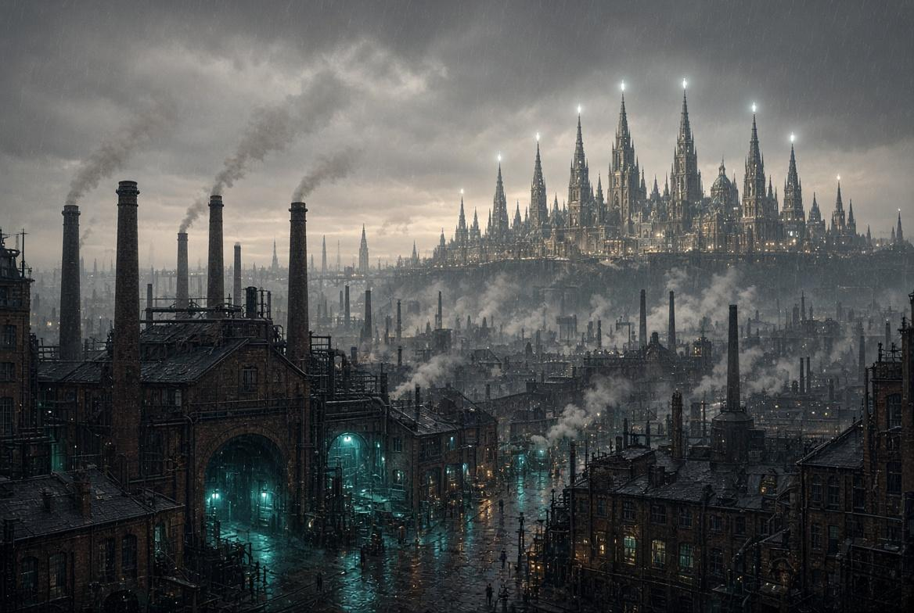
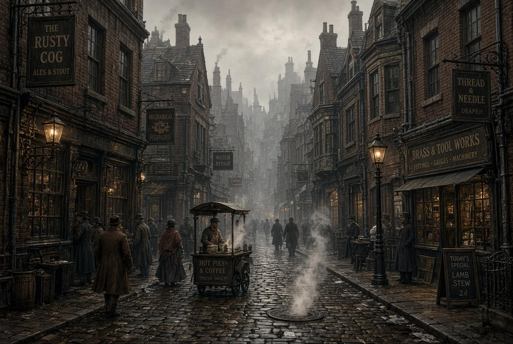
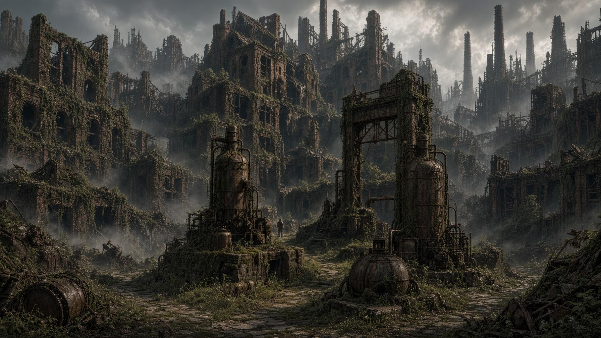
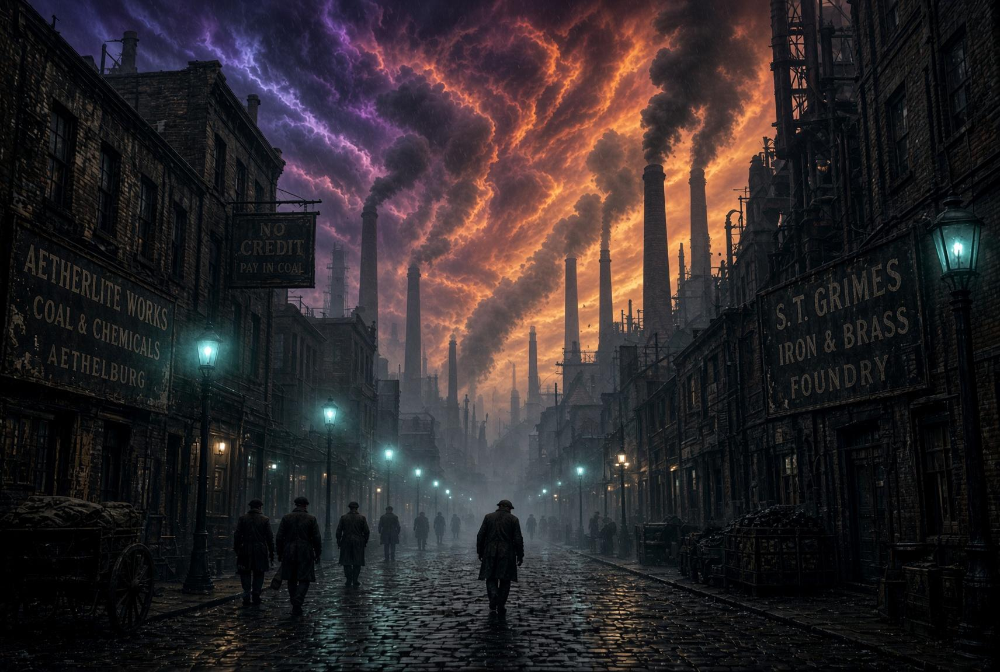
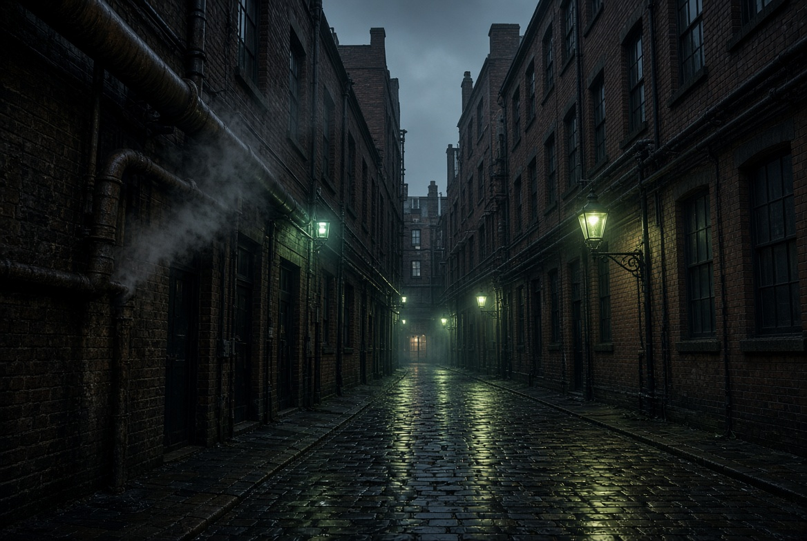

Writings & Worlds
Poetry, fiction, and the spaces between
Poetry, fiction, and the spaces between
Dark Fantasy Mystery · Part One Forthcoming

Some echoes refuse to stay buried.
Enter Aethelburg, a city beneath strange skies, where ingenious machinery shapes everyday life and nothing is quite as ordinary as it seems. A city divided by family status, wealth, skills, luck, and fate. From the immaculate avenues of the Spires to the crowded streets of the Shrouded Quarters, the industrial sprawl of Smelter’s Ward and Sootfall, and the winding paths of the Tangle, every district bears the marks of a different life.
Beneath Aethelburg’s strange skies, in a Rift-driven world shaped by catastrophe, forgotten places and buried secrets remain woven into its streets. Splendour and hardship exist side by side, and the past is never quite as distant as it seems. It comes calling whenever it pleases.
In a city rebuilt on the chaotic power of the Rift, the age’s greatest inventor is found dead in his workshop. The Ministry calls it an accident. His daughter calls it murder.
But some secrets were never meant to be seen. And someone is willing to kill to keep them that way.

Shrouded Quarters — Crowded streets thick with secrets, commerce, and the weight of everyday lives.
Smelter’s Ward — Once the industrial heart of the city, home of the Consolidated Ironworks and the first foundry built to harness the Rift. Before the fire of ’78 it was the backbone of Aethelburg’s future. Now, a dead zone.
Sootfall — The name the people use. Officially the South Bank Industrial Habitation Zone, built north of Smelter’s Ward after the fire to house the displaced. The air still carries the taste of sulfur and metal, and the sun remains little more than a rumor behind the ash.
Tangle — Sandwiched between the Ironworks and the Tanneries. A chaotic maze of narrow streets where buildings lean on one another for support and pipes hiss steam at odd intervals. Everything stays damp. Little here is straightforward.Part One is currently in preparation. Join the reader list for exclusive updates, behind-the-scenes glimpses into Aethelburg, and news about the upcoming release of Echoes of Broken Gears: Part One.
Some readers will enter Aethelburg before everyone else. ARC applications will open soon.
Published by Eron Publications. Stories for the curious.